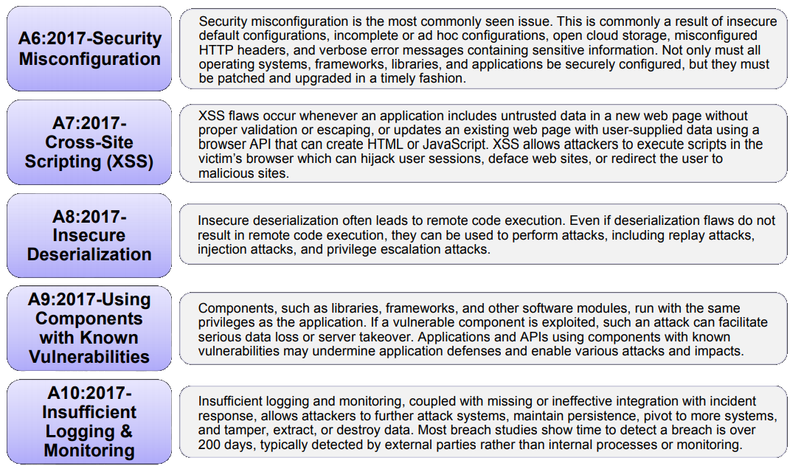

Sistemas seguros em PHP
estou fazendo certo?
Quem sou eu

Quem sou eu
Agenda
- OWASP Top Ten
- Gerenciamento de sessão
- Validação de entradas
- Armazenamento e políticas de senhas
- Enumeração de usuários
- Referências
OWASP Top Ten
OWASP Top Ten

OWASP Top Ten
Gerenciamento de sessão
Codificação
Regere o ID da sessão no login e logout para mitigar Session Fixation
if ($user = $this->loginFrom($_POST)) {
session_start();
session_regenerate_id(true); // true para apagar a sessão antiga
}Configurações
USE HTTPS!
Com Let's Encrypt, podemos ter
certificados SSL gratuitos ♥
- Lista de clientes suportados
- Uso e recomendo o acme.sh
Configurações do PHP
session.cookie_domain="meusite.com.br"
session.cookie_httponly=On
session.cookie_samesite="Strict"
session.cookie_secure=On
session.name="MYSESSNAME"
session.sid_bits_per_character=6
session.sid_length=48
session.use_only_cookies=On
session.use_strict_mode=On
session.use_trans_sid=OffReferências
Validação de entradas
“Mas eu estou validando no frontend!”— Alguém antes de ter sua aplicação invadida
- Você pode utilizar filtros de XSS na entrada
-
Mas deve tratar a saída
- Se usar uma ferramenta de templating, verifique sua própria função
-
Senão, use a função nativa:
htmlentities($str, ENT_QUOTES | ENT_HTML5, $encoding)
- Valide os dados de entrada de acordo com o que você espera para aquele campo (data type) Exemplo: um nome de uma pessoa pode ter apenas letras, espaços, números, hífen e apóstrofo (não esqueça dos acentos!)
- Crie uma camada em seu framework que irá validar todos os dados da requisição antes de chegar à camada de negócio
- Se um campo não possuir um data type estipulado, remova-o da requisição
-
Você pode optar por duas abordagens
- Sanitizar a entrada e seguir o processamento com o valor limpo; ou
- Parar o processamento com
HTTP 400 Bad Request(recomendado para aplicações críticas)
Referências
Armazenamento e políticas de senhas
Políticas
- Não limite os caracteres permitidos
- Não coloque um tamanho máximo
-
O tamanho mínimo pode variar de acordo com as necessidades de sua aplicação
(de acordo com o NIST SP800-132, 10 caracteres é o desejável) -
Crie mecanismos de complexidade
Exemplo: ao menos 1 caractere maiúsculo, 1 minúsculo, 1 número e 1 caractere especial
Armazenamento
- Aplique um algoritmo de hash para transformá-la em um texto com tamanho fixo
- Utilize um salt específico para aquela senha
- Criptografe o hash gerado para garantir que você possa recriptografar todas as senhas caso haja vazamento do banco de dados
Se possível, use a libsodium!
Uma biblioteca segura, moderna e fácil de usar...
(por mais que os métodos sejam um pouco verbosos)
Sim, estou de olho em você, sodium_crypto_sign_keypair_from_secretkey_and_publickey()
Referências
public function login(string $username, string $password) : bool
{
$user = $this->findByUsername($username);
if (! $user) {
return false;
}
if (! $this->verifyPassword($password, $user->getPassword())) {
return false;
}
return true;
}Enumeração de usuários
É possível saber que usuários existem em sua aplicação através de Timing attacks
public function login(string $username, string $password) : bool
{
$storedPassword = $this->generateFakePassword();
$user = $this->findByUsername($username);
if ($user) {
$storedPassword = $user->getPassword();
}
return ($this->verifyPassword($password, $storedPassword))
&& ($user !== null);
}Será que não estamos exagerando?
É realmente possível ver essa diferença?
Vamos testar, então!
Executando os scripts login-user-enumeration.php
e login-user-enumeration-fixed.php
Referências
Ferramentas
Leituras
Vulnerabilidades
Eventos
Pontos de atenção
- Proteger uma aplicação Web não é algo trivial
- Existem muitos outros ataques e técnicas de defesas além dessas
- Avalie o que faz sentido para seu sistema
- Utilize técnicas de defesa em camadas